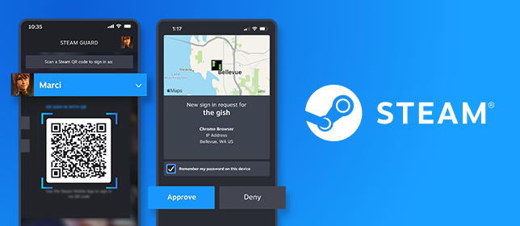
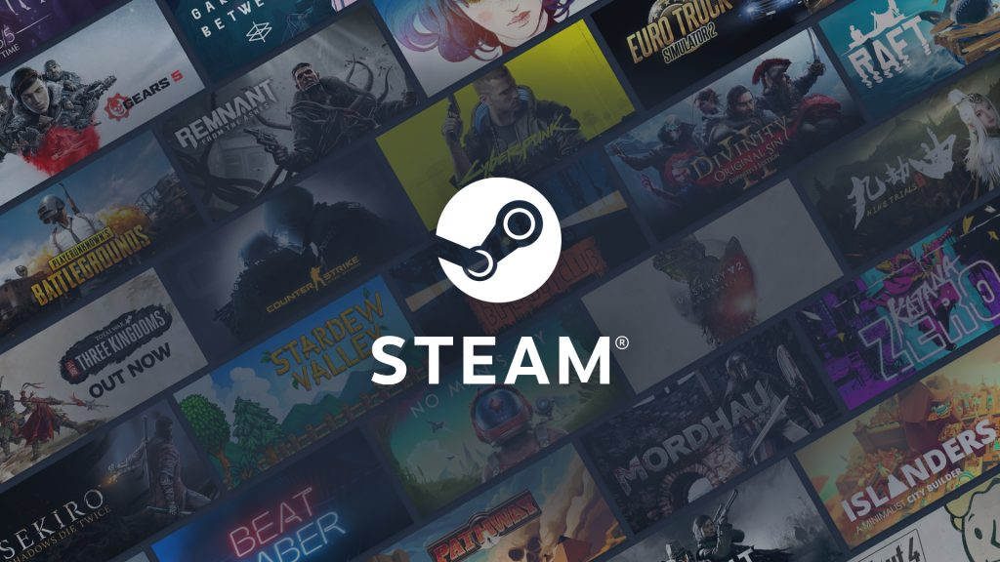
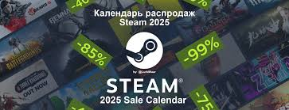

Новини
Якщо ти користуєшся контролерами — Beta‑версія Steam додала підтримку контролерів від Nintendo Switch 2, а також підтримку адаптерів GameCube у режимі Wii‑U для ПК.
Покращено стабільність клієнта, виправлено баги — багато з них стосувались “Steam Overlay”, добавлено підвищену сумісність з контролерами, поліпшено запис гри, стабільність у Linux‑середовищах.
Останні оновлення зміцнили безпеку: зокрема, Steam вніс зміни, щоб блокувати запускі деяких ігор (на випадок виявлення уразливостей — наприклад, CVE‑2025‑59489).
Для користувачів Steam Deck: останнє оновлення клієнта додало опцію “display‑off downloads” (завантаження з вимкненим дисплеєм), що зручно для фонових завантажень; також виправлено різні проблеми зі стабільністю, підвищено надійність.

Новинки стім
Routine — survival-horror у космосі / на дослідній станції на Місяці, довгоочікуваний реліз після 13 років розробки.
Marvel Cosmic Invasion — 2D beat-’em-up у стилі коміксів, для фанатів аркадних боїв.
Hail to the Rainbow — атмосфера постапокаліпсису + бойові елементи і головоломки, перша особа / сюжетний FPS.
CloverPit — психологічний roguelite-хорор із слот-машинами на виживання — незвичний інді-експеримент на Steam.

Акції в стім
Згідно з офіційним календарем 2025, черговою акцією буде Sports Fest — з 8 до 15 грудня 2025
Не так давно — розпродаж до Black Friday / початку грудня 2025: багато ігор зі знижками до ~75–80%.
Якщо не терміново — можна чекати на Winter Sale (або Sports Fest) — часто знижки бувають найсерйознішими.
Перевіряй свої “хотілки” перед розпродажем — так легше зловити гру за мінімальною ціною.

кіберспорт‑сцена
2025 — один із ключових мейджорів CS2 — із 24 листопада по 14 грудня 2025.
Для Dota 2 запущено оновлену систему турнірів у рамках ESL FACEIT Group — в сезоні 2025/2026.
За перші 6 місяців 2025 року перегляди українськомовних кіберспортивних трансляцій зросли понад на 40 %.
У 2026‑му серед підтверджених дисциплін на Esports World Cup 2026 — CS2 разом із Dota 2.